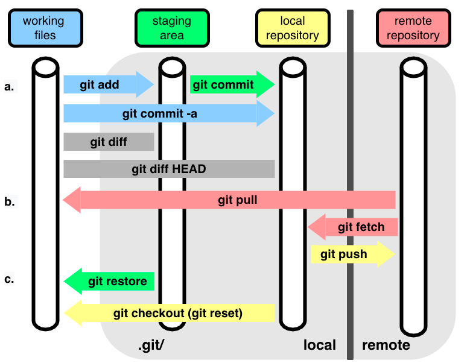

Git est un système de contrôle de version distribué qui permet aux développeurs de suivre les modifications apportées à leur code source au fil du temps. Github, quant à lui, est une plateforme en ligne qui héberge des projets utilisant Git, facilitant la collaboration entre les développeurs.
Git a été créé par Linus Torvalds en 2005 pour gérer le développement du noyau Linux. Il permet aux développeurs de travailler sur différentes branches de code, de fusionner les modifications et de revenir à des versions précédentes si nécessaire.
Github offre une interface conviviale pour héberger des projets Git. Il permet aux développeurs de collaborer sur des projets open source, de suivre les problèmes (issues) et de gérer les demandes de tirage (pull requests) pour intégrer les modifications proposées par d'autres contributeurs.
git init: Initialise un nouveau dépôt Git dans le répertoire actuel.
git clone [url]: Clone un dépôt distant à partir de l'URL spécifiée.
git add [fichier]: Ajoute un fichier spécifique à l'index pour le
prochain commit.git commit -m "message": Enregistre les modifications ajoutées à
l'index avec un message descriptif.git push: Envoie les commits locaux vers le dépôt distant.git pull: Récupère les modifications du dépôt distant et les fusionne
avec la branche locale.git branch: Affiche la liste des branches dans le dépôt.git checkout [branche]: Change de branche pour travailler sur une autre
version du code.git merge [branche]: Fusionne la branche spécifiée dans la branche
actuelle.git status: Affiche l'état actuel du dépôt, y compris les fichiers
modifiés, ajoutés ou supprimés.git log: Affiche l'historique des commits dans le dépôt.git diff: Affiche les différences entre les fichiers modifiés et leur
version précédente.git reset [commit]: Réinitialise l'état du dépôt à un commit
spécifique, en supprimant les commits ultérieurs.git stash: Met de côté les modifications en cours pour les appliquer
plus tard, permettant de travailler sur une autre branche sans perdre les
modifications en cours.git remote: Gère les dépôts distants associés au dépôt local.git fetch: Récupère les modifications du dépôt distant sans les
fusionner avec la branche locale.Si le dépôt existe déjà en ligne, vous pouvez le cloner sur votre machine locale en
utilisant
la commande git clone [url]. Ensuite, vous pouvez créer une nouvelle
branche
pour travailler sur vos modifications, ajouter vos changements à l'index avec
git add, committer vos modifications avec git commit, et
enfin pousser vos changements vers le dépôt distant avec git push.
Si le dépôt n'existe pas encore en ligne, vous pouvez initialiser un nouveau dépôt Git
dans votre répertoire de projet local en utilisant la commande git init.
Ensuite, vous pouvez ajouter vos fichiers au dépôt avec git add,
committer vos modifications avec git commit -m "message", et enfin créer un
dépôt
distant sur Github, creer un origin avec git remote add origin [url], et
pousser vos changements vers le dépôt distant avec
git push -u origin master.
